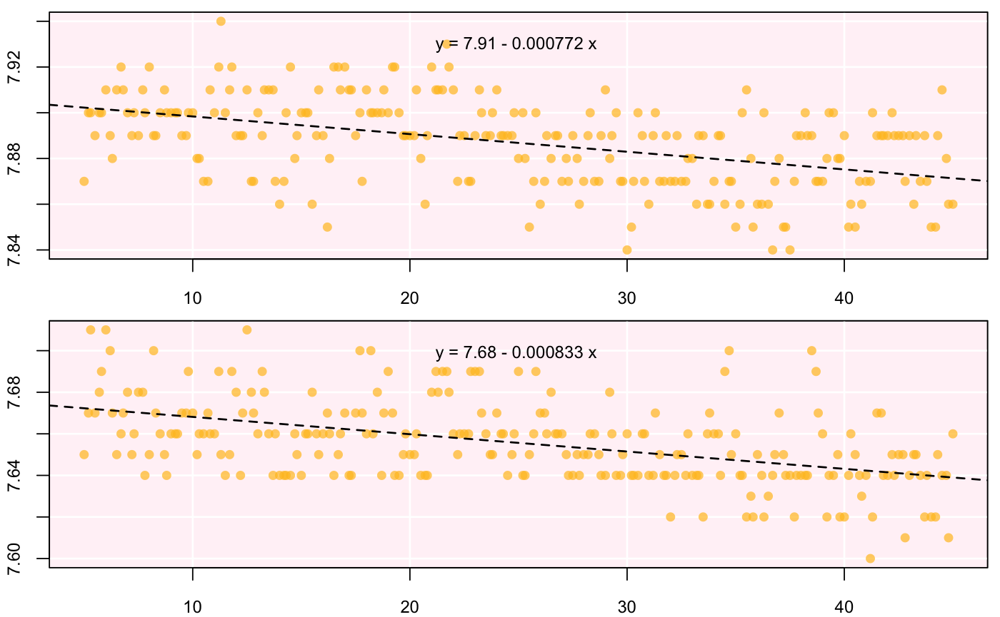

This function uses simple linear regression to automatically calculate the rate of change of oxygen over time for background corrections of the main data. Can be used on multiple datasets of background measures, as long as the time data are identical between measurements.
calc_rate.bg(x, xcol = 1, ycol = 2, from = NULL, to = NULL, by = "time", plot = TRUE)
| x | data frame. This is the data to process. |
|---|---|
| xcol | numeric. Defaults to |
| ycol | numeric vector. Defaults to |
| from | numeric. Defaults to NULL. Defines the upper bound(s) of the data
frame to subset. Subsetting is based on the argument: |
| to | numeric. Defaults to NULL. Defines the upper bound(s) of the data
frame to subset. Subsetting is based on the argument: |
| by | string. |
| plot | logical. Defaults to TRUE. Will plot the results for visual inspection. |
A list object of class calc_bg.rate.
There are no units involved in calc_rate.bg(). This is a deliberate
decision. Units are called in a later function when volume- and/or
weight-specific rates of oxygen concentration are computed in
convert_rate() and convert_DO().
calc_rate.bg(urchins.rd, xcol = 1, ycol = 18:19, from = 5, to = 45, by = "time")#> Rate(s): #> [1] -0.0007723979 -0.0008328292